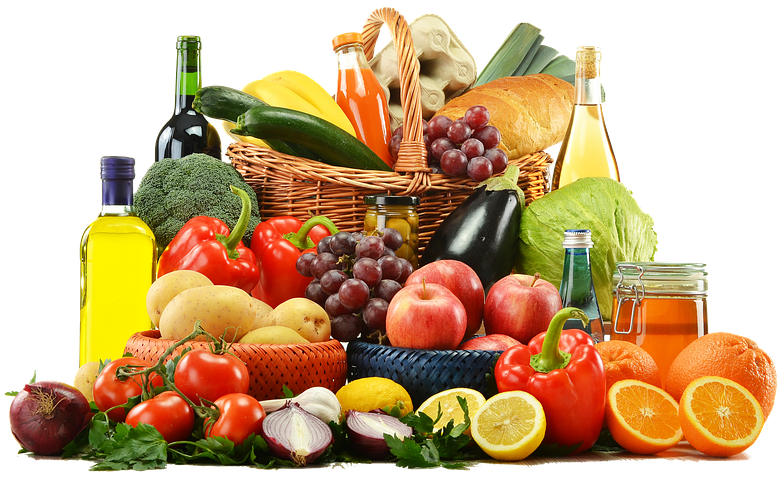

Welcome to FrescoMart
Organic, Fresh Food
FrescoMart is a colorful design perfectly suitable for agricultural business, agrotourism, healthy food blog, organic food shop, organic farm, bakery – and etc . With 5 specific homepages will help you create a friendly view with customers at the first look. The whole of the website is a green color of healthy fruit & delicious vegetable together with enough awesome effects of premade elements, which make visitors feel really fresh to enjoy.
